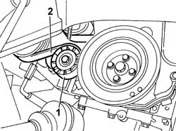

1092B72 POWER STEERING PUMP DRIVE BELT - ALTERNATOR - R&R
- Path
- Procedures > 10 ENGINE UNIT > 1092 VARIOUS ENGINE COMPONENT CONTROLS > 1092B WATER PUMP AND ALTERNATOR DRIVE > 1092B72 POWER STEERING PUMP DRIVE BELT - ALTERNATOR - R&R
- Kind
- repair procedure (removal / refitting; the operation number is the code)
- Applies to
- engines: 2.3 JTD 16V; all production periods
- Interactive page
- https://sloeber94.github.io/elrnDB-fDct/en/#/244000987
Applies to: engines: 2.3 JTD 16V; all production periods
 Removing
Removing
 Refitting
Refitting- Position the vehicle on the lift.
Op. 7055B54 UNDER-ENGINE GUARD - R R
Op. 4450B04 RIGHT FRONT WHEEL R R
1. Adjust the mobile tensioner to slacken the single engine component drivebelt
2. Remove the auxiliary shaft drive belt.

Applies to: engines: 2.3 JTD 16V; all production periods
Refitting
Removing- Fit the single drive belt on the pullies.
- The tensioning device is automatic and uses a preset spring to set the correct tension upon assembly and automatically take up any wear that arises during normal service.
- Adjust the automatic tensioner and move to maximum preload position, fit the auxiliary drivebelt and slowly release the tensioner.
Op. 4450B04 RIGHT FRONT WHEEL R R
Op. 7055B54 UNDER-ENGINE GUARD - R R
- Remove the vehicle from the lift.
Topics linked from this page (2)
Topics that link to this page (22)
- 1008A46 CAM SHAFT LEFT RIGID MOUNT - R R
- 1016B10 SINGLE CYLINDER HEAD EXTENSION - CHANGE GASKET
- 1020D14 FRONT CRANK SHAFT OIL SEAL COVER - R + R AND REPLACE SEALS FOR VERSIONS WITH OIL PUMP ON CRANK SHAFT, TIMING SIDE
- 1020D18 FRONT CRANK SHAFT COVER OIL SEAL - REPLACE
- 1028H10 PISTON WITH CONNECTING ROD - R R
- 1032B10 TOOTHED TIMING BELT - R + R FOR TIMING ADJUSTMENT OR REPLACEMENT
- 1032B46 TOOTHED DRIVE PULLEY - R + R
- 1032B52 TOOTHED DRIVEN PULLEY (ONE) - R + R
- 1032C19 MOBILE TIMING BELT TENSIONER - R R FOR VERSIONS WITH AIR CONDITIONER
- 1032C32 FIXED TIMING SYSTEM TENSIONER (ONE) R + R
- 1032D12 TIMING SYSTEM PROTECTIVE COVER(S) - R + R
- 1036L10 CAMSHAFTS IN CYLINDER HEAD EXTENSION - R R - INCLUDES CYLINDER HEAD EXTENSION REPLACEMENT IF NECESSARY
- 1036L30 FRONT OIL SEAL OF INTAKE CAMSHAFT IN CYLINDER HEAD EXTENSION REPLACE
- 1036L52 EXHAUST CAMSHAFT FRONT SEAL IN CAMSHAFT HOUSING - REPLACE
- 1060E10 PRESSURE PUMP - R R
- 1060E30 PRESSURE PUMP PULLEY - R R
- 1060E40 SUPPLEMENTARY PRESSURE PUMP - R R
- 1092A10 CRANKSHAFT SERVICES PULLEY - R.R.
- 1092B80 AUXILIARY BELT FIXED TENSIONER (ONE) - R+R
- 1092B82 AUXILARY BELT MOBILE TENSIONER (ONE) -R+R
- 4130B20 POWER STEERING PUMP R R
- 5530A10 ALTERNATOR - R+R